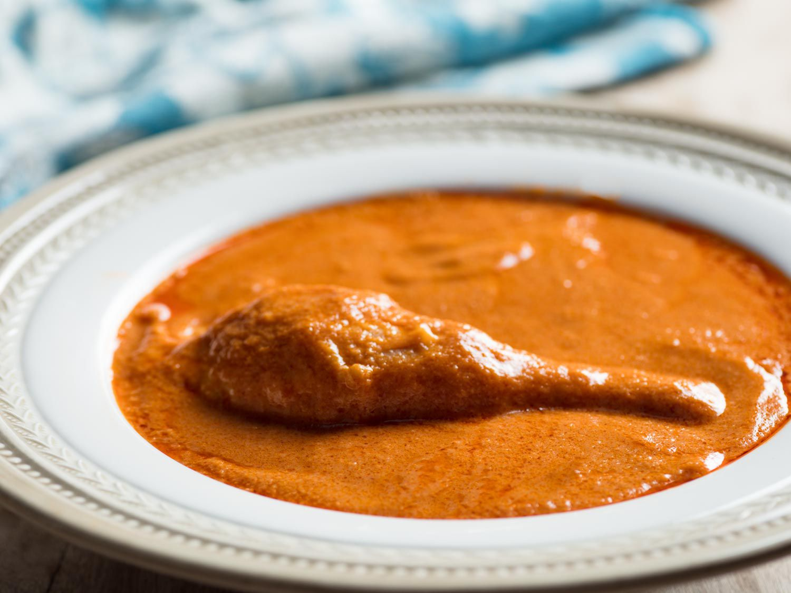

Peanut Soup

Description.
Groundnut Soup is made with a wonderful combination of ingredients for a surprisingly different and delicious soup that everyone will enjoy!
A delicious soup combining the taste of peanuts and tomatoes.
Ingredients
- 1 cup of dried mushrooms
- 1-2 cups of fresh mushrooms
- 1 large onion
- 2 tomatoes
- 2 large thumps of ginger (2 inch chunks)
- 3 cloves of garlic
- 1 Scotch bonnet pepper
- 1 tsp black pepper
- 1 tsp coriander seeds
- 1 tsp cloves
- 2 tsp anise seeds
- 2L veggie broth - can also use veggie bouillon and mix with water per products instructions
- 1 tbsp of tomato paste
- 1 1/3 cup of hot water
- 3/4 cup natural peanut butter
- 1 block of firm tofu chopped in cubes
- Chicken, meat or any other edible animal flesh or fish(optional)
Steps
- Chop a quarter of the onion and leave the rest as whole.
- Grate the quarter onion, ginger and garlic into a mixture
-
Roughly grind the whole spices (anise seeds, coriander seeds, cloves and black pepper)
and mix with the grated onion mixture
- Steam the dried mushrooms with your grated onion and spice mixture, whole tomatoes and
the rest of the onion in 4 cups of veggie broth till the broth is boiling.
-
When it boils, and the skins are starting to come off the tomato, turn the heat down,
remove the whole tomatoes and onions and blend with the pepper along with another 2
cups of veggie broth.
- After blending, sift the blended mixture into the soup and discard the leftover fibre.
- Add in another 2 cups of veggie broth, and bring the soup to a boil for 5 mins
-
While the soup is boiling, blend the peanut butter with the tomato paste,
1 1/3 cup of hot water till it is nice and milky.
-
After 5 mins has passed, add in the peanut butter mixture
into the boiling soup and an additional 2 cups of veggie broth.
-
Once the soup has come to a bubble, add the tofu.
Check the soup for salt and adjust according to your taste
-
Let the soup bubble for about 20 mins at medium-low heat then lower the heat after and let the soup simmer for the remainder of time.
You can add the rest of your fresh mushrooms and leave the soup uncovered.
If the soup is getting too thick (close to a stew texture) please add some extra water
(You can now add your meat or fish: make the meat or fish edible before you add(that is,steam the meat or fish if required to make it edible)
-
There is no set time to allow the soup to simmer.
It usually takes between an hour to an hour and a half (from when you added the peanut butter) for it to cook.
You will know that the soup is ready when it has reduced: it is no longer foaming and the oil has pooled at the top.
You will be looking for red streaks at the top. (There may be alot of oil if meat, chicken or any other edible animal flesh is used.)
- Serve and enjoy!!
Note: You can store the soup in the fridge or on the stove for a day.
(if stored on the stove you just need to heat the soup everyday on the stove)
Take me back to home page!